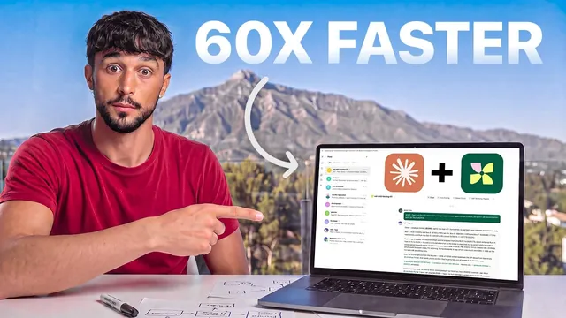

46명 회계법인을 AI로 4일 만에 재설계했다

원본 영상 보기 →
- 자동화 전에 반드시 '측정'부터 한다
- 규제 산업 자동화의 진짜 장벽은 기술이 아니라 '암묵지'와 '책임 소재'다
- 음성 인터뷰로 암묵지를 옮기는 방식이 텍스트 작업보다 훨씬 빠르다
한 줄 요약
유튜버 Liam Ottley가 영국 세무·회계 자문사 Thomas and Co를 찾아가, 나흘 동안 "VAT 워킹페이퍼"(고객 계좌 대조 문서) 작성 업무를 AI 에이전트 플랫폼 Kylon으로 자동화하는 과정을 그대로 따라간 브이로그형 영상.
전체 내용 정리
회계법인의 숨은 병목: 워킹페이퍼 수작업
Thomas and Co는 5년 연속 매출이 두 배씩 성장한 영국의 급성장 세무·회계 자문사다. 하지만 회계사 25명은 '워킹페이퍼'—고객 계좌에 찍힌 숫자 하나하나를 은행 내역 같은 증빙으로 대조해서 맞추는 문서—를 손으로 채우는 데 주당 20시간 넘게, 근무시간의 절반 이상을 쓰고 있었다. 워킹페이퍼 종류는 VAT, 월말 결산, 연말 결산, 자기평가(self assessment) 등 17가지에 달했고, 한 번에 몰려서 소요되는 게 아니라 15분, 20분, 30분씩 하루 종일 흩어져서 시간을 갉아먹는 구조였다.
1일차: 뭐부터 자동화할지 측정부터
자동화를 시작하기 전 팀은 17개 워킹페이퍼 전부를 화이트보드에 올려 각각의 빈도, 소요시간, 난이도, '완전 자동화 대상인지 보조 대상인지'를 기준으로 측정했다. 예를 들어 어떤 업무는 사람의 95%가 처리하고 난이도는 낮은데 1시간이 걸리는 반면, 다른 업무는 20%만 처리하지만 15분이면 끝났다. 이렇게 따져보니 VAT 관련 업무가 전체 고객의 100%에게 필요하고 건당 1시간씩, 한 달에 250시간을 잡아먹는 가장 임팩트 큰 영역으로 드러났다. 그래서 17개 중 VAT 하나를 먼저 자동화해 검증하고, 성공하면 같은 구조를 나머지 16개에 그대로 적용하기로 했다.
자동화 앞의 두 가지 장벽: 암묵지와 서명 책임
문제는 두 가지였다. 첫째, 회사와 고객에 대한 지식 대부분이 매니저와 회계사들의 머릿속에만 있어서, 이걸 전부 끌어내 AI에 넘겨주지 않으면 시스템이 제대로 작동할 수 없었다. 둘째, AI가 작업을 처리해도 법적 책임은 결국 사람이 서명해야 진다는 점이었다—규제 산업이라 뭔가 잘못되면 실제 대가가 따르고, 업계가 좁아서 소문도 빨리 도니 평판에 대한 압박이 컸다고 대표는 말한다.
대표 Josh Thomas의 배경
Josh Thomas는 파이낸스 부문 Forbes 30 under 30(2026), 올해의 기업가상 2회 수상, 회사는 '최고의 일하기 좋은 직장' 3회 수상 등 화려한 성과를 냈지만, 그 이전엔 매일 새벽 4시에 출근해 밤 10시~12시까지 일하며 무의미한 반복 업무로 시간을 갉아먹던 시기가 있었다. 어릴 때 할아버지가 저녁 식사 전 수학 문제 20개 중 16개 이상을 맞혀야 밥을 먹게 했던 것이 그의 성취 지향을 만들었지만, 할아버지가 60대 중반에 갑자기 병으로 세상을 떠나면서 '평생 부를 쌓는 데만 집중하면 그 부를 누릴 미래는 오지 않을 수 있다'는 교훈을 얻었다고 말한다.
2일차: 스프레드시트를 버리고 데이터베이스로
빌드의 첫 단계는 회사가 아는 모든 정보—전부 스프레드시트나 사람 머릿속에 있던 것—를 하나의 데이터베이스로 옮기는 작업이었다. 제작진은 "스프레드시트는 죽었고 이제 데이터베이스가 왕이다. 아직 스프레드시트를 쓰고 있다면 AI를 올릴 기반이 안 됐다는 신호"라고 짚는다. 이 작업에 쓴 플랫폼은 이번 영상의 스폰서인 Kylon으로, 에이전트를 만들 때 이름과 성격을 정하고 회사 웹사이트만 입력하면 에이전트가 스스로 홈페이지를 읽고 업무를 이해한 뒤, 자동화하고 싶은 반복 업무를 되묻는 온보딩 플로우를 제공한다. 목표로 잡은 워크플로우는 매달 초 관리회계가 막히는 지점까지 자동으로 진행되고, VAT 대조 작업을 시키면 항목별로 초록(정상)·빨강·주황(확인 필요)으로 표시해 사람이 확인할 것만 짚어주는 구조였다. 즉 목적은 사람을 없애는 게 아니라, 사람의 시간을 수동 데이터 입력에서 빼내는 것이었다.
3일차: 회사 노하우를 AI에 옮기는 음성 통화
개발자들은 회사 계정에서 숫자를 바로 가져오는 API를 연결하고, 세법 전체를 읽지 않고 필요한 조항만 찾을 수 있도록 세법 텍스트를 잘라서 넣었다. 마지막으로 남은 건 이 회사가 실제로 어떻게 일하는지—여전히 Josh의 머릿속에만 있는 정보였다. 이를 옮기기 위해 Kylon의 음성 에이전트가 Josh에게 전화를 걸어 워킹페이퍼 종류(VAT·월말 결산·연말 결산·자기평가), 상태 흐름(계좌 대조 시작→막힘 발생→자동 조회 시도→필요 시 사람에게 에스컬레이션→대조 완료→조정 반영), 막힘의 유형(원본 데이터 불일치, 고객 정보 누락) 등을 인터뷰 형식으로 물었다. Josh는 이 대화가 "친구나 동료와 통화하는 것과 비슷했다"며, 텍스트로 일일이 쳐서 넘기던 한 시간짜리 작업이 통화 한 번으로 끝났다는 점과 앞으로도 막힘이 생길 때마다 같은 방식으로 대화할 수 있다는 점에 놀랐다고 말한다.
4일차: 팀에 인수인계하고 실전 테스트
마지막 날 오전은 새 시스템을 만드는 게 아니라 팀이 스스로 돌릴 수 있는 상태로 넘기는 데 썼다. 개발자 Jesse가 작업 내용을 팀이 직접 실행할 수 있는 저장소(repo)로 정리해, 다음번엔 외부 인력 없이도 굴러가게 만들었다. 이때까지도 파이프라인은 처음부터 끝까지 한 번도 완주한 적이 없었고, Josh는 에이전트가 무엇을 하고 있는지 볼 수 있는 화면조차 없는 상태였다. 팀은 미리 예약해둔 보트 여행 중에도 노트북을 들고 작업을 이어갔고, 보드뷰(진행 중인 요청 현황, 대기 중인 검토, 고객에게 보낸 요청 목록을 한눈에 보는 화면)를 완성했다. 이후 회계사가 이미 손으로 처리했던 VAT 대조 건 하나를 AI에 그대로 시켜 같은 결과가 나오는지 확인하는 최종 테스트를 했고, 배가 정박하는 순간 테스트가 끝까지 돌아갔다는 결과—AI가 낸 답이 사람이 낸 답과 일치했다는 결과를 받았다.
Josh의 소감과 마무리
Josh는 "이 회사가 지금보다 50~60배 효율적인 조직이 될 것"이라며, 팀 규모를 늘리지 않고도 새로운 수준으로 확장하고 고객에게 더 나은 서비스를 제공할 수 있을 거라고 기대했다. 그는 사업을 하는 이유(왜)를 명확히 하는 게 중요하다고 강조하며, 남의 기대나 사회적 기준이 아니라 자신의 내적인 이유에 집중해야 장기적으로 그 힘든 과정을 버틸 수 있다고 말한다.
핵심 인사이트
- 자동화 전에 반드시 '측정'부터 한다: 17개 업무를 빈도·소요시간·난이도·목표(자동화/보조)로 전부 매핑하고서야 어디를 먼저 손댈지 정했다. 감으로 고르지 않고 숫자로 우선순위를 매긴 게 핵심.
- 규제 산업 자동화의 진짜 장벽은 기술이 아니라 '암묵지'와 '책임 소재'다: AI가 일을 해도 서명은 사람이 해야 하고, 회사 노하우 대부분이 사람 머릿속에만 있다는 점이 가장 어려운 부분이었다. 이 지식을 어떻게 밖으로 꺼내느냐가 자동화 성공의 관문이었다.
- 음성 인터뷰로 암묵지를 옮기는 방식이 텍스트 작업보다 훨씬 빠르다: 에이전트가 전화로 업무 흐름을 되물어 정리하니, 사람이 문서로 일일이 정리해 넘기던 한 시간짜리 작업이 통화 한 번으로 끝났다.
- 목표는 사람을 없애는 게 아니라 사람의 시간을 수동 입력에서 빼내는 것: AI가 항목을 초록/빨강/주황으로 표시해 사람은 확인이 필요한 부분만 보게 하는 구조로 설계했다.
오늘 당장 해볼 것
- 반복 업무(고객 응대, 문서 작성, 대조 작업 등)를 전부 나열하고 각각에 빈도·소요시간·난이도 점수를 매겨 어디가 가장 임팩트 큰지 표로 만들어본다.
- 업체나 팀원에게 "이 업무를 처리할 때 판단 기준이 뭐예요?"를 구체적으로 물어 머릿속에만 있는 노하우를 문서나 녹음으로 남겨둔다.
- 스프레드시트로 관리 중인 고객·업무 데이터가 있다면, 이를 하나의 데이터베이스(Airtable, Notion 등)로 옮기는 게 AI 자동화의 전제조건이라는 점을 팀에 공유하고 이전 계획을 세운다.